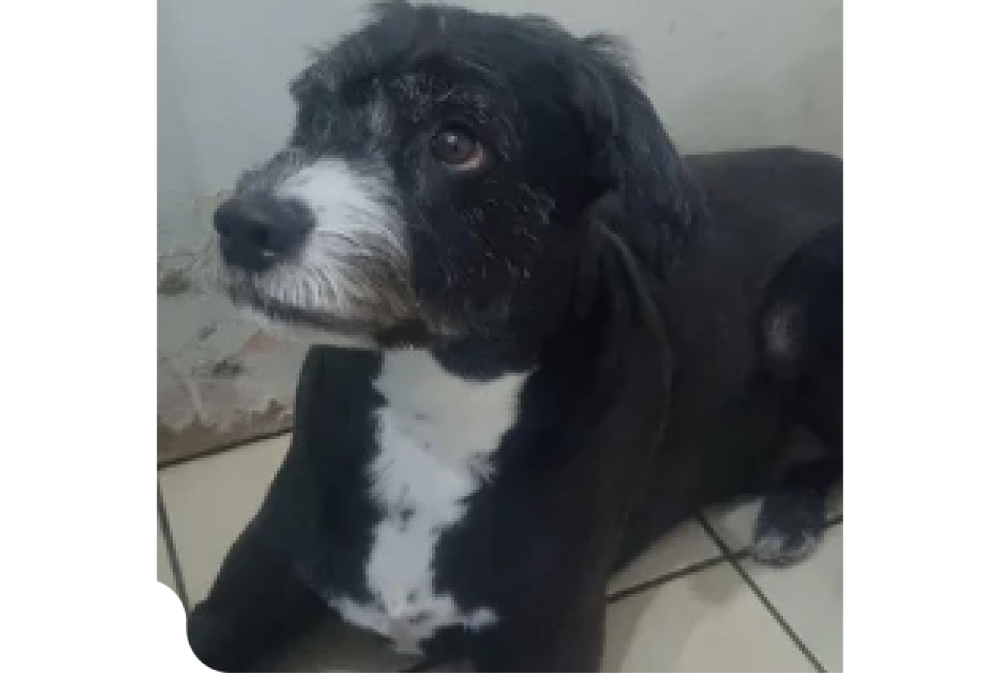
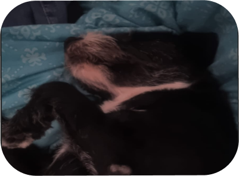

Blacky


Buscando
Estoy desesperado buscando a mi perro Blacky, se nos perdió aquí en Arica. Es parte de nuestra familia y lo extrañamos muchísimo.
- Su nombre: Blacky
- Raza: Sin raza
- Rasgos: bigotes llamativos y patas de color blanco
2.9 Km (Linderos / Islas Alacrán)
Comentarios (0)